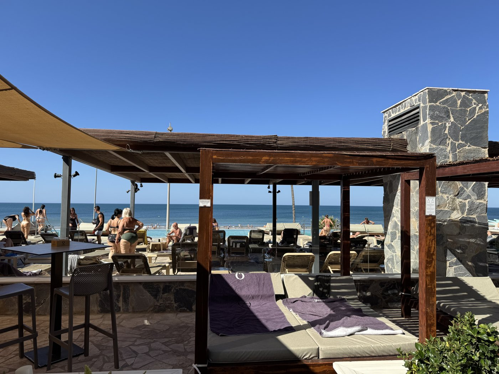
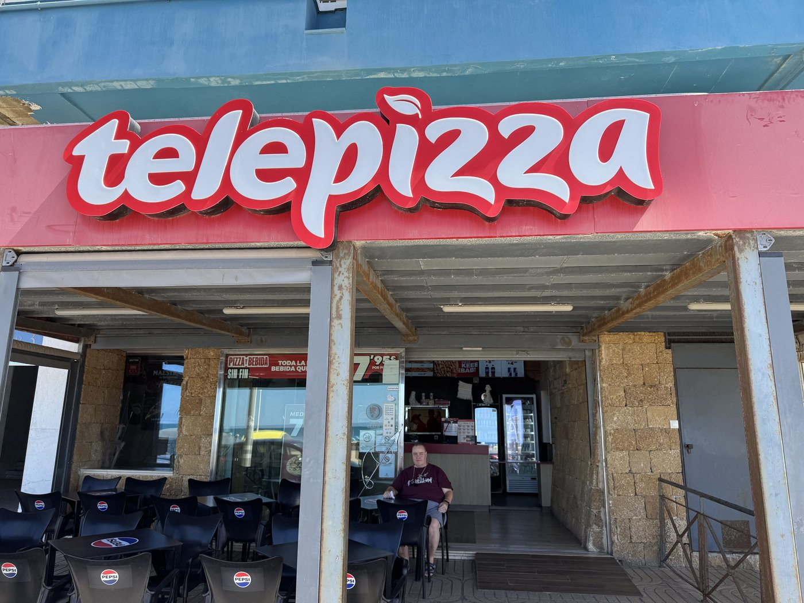
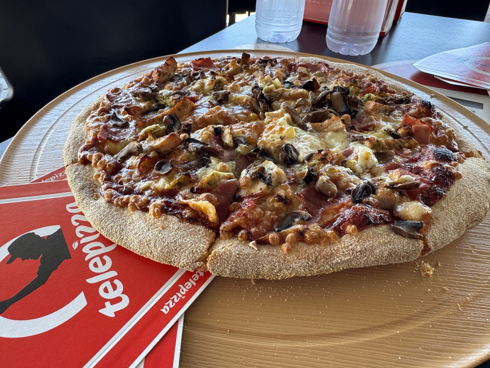

Wir haben uns eine Auszeit genommen. Nach fast zwei Wochen zum ersten Mal die Poolbar genossen, mittags eine Telepizza „genossen" und ansonsten nur ein bisschen Shopping im Viertel gemacht. Ich war noch zu fix und alle von den Ausflügen der Tage davor.

Zur Telepizza muß man sagen: Wirklich gut war sie nicht. Das hatten wir auch nicht erwartet — aber wir hatten gehofft, vielleicht eine Entdeckung zu machen. Haben wir nicht.


Das war der Tag. Es ist ein Urlaubsbericht — da muß man auch mal chillen.